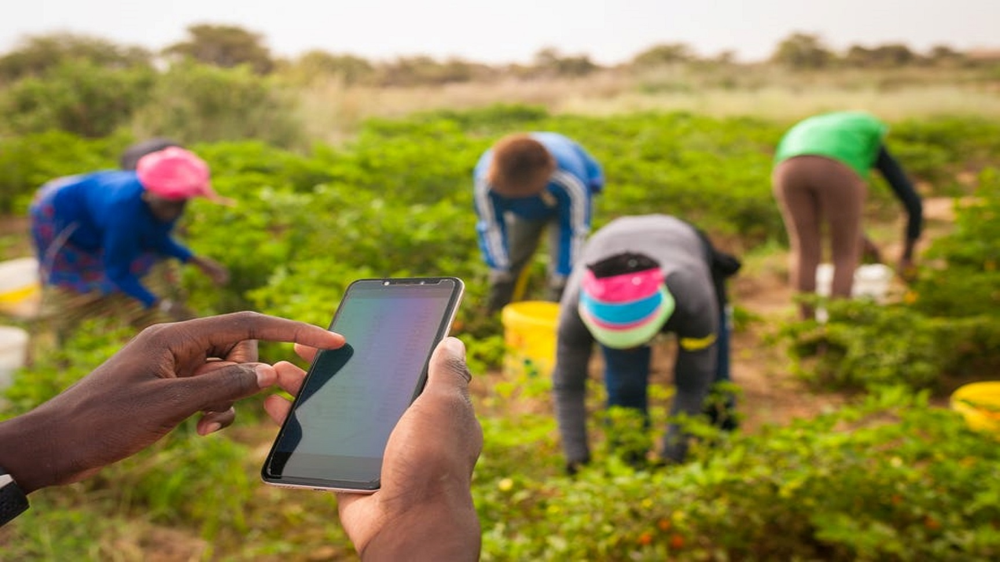

Why are we different
Our unique platform is to provide diverse services for all your agric projects

Why are we different
FARMASYST is here to provide monitoring services for all agric projects

What's New In
Agriculture
Farmasyst is here to provide connectivity between Agricbusinesses and farmers